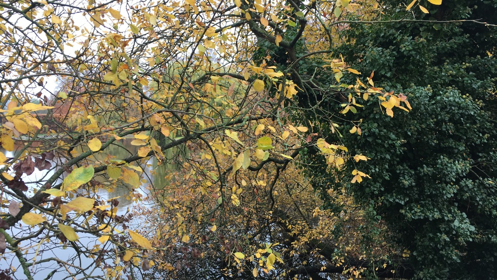

The Beauty Of Malmö
Malmö is a city located in Sweden, it is on the top fifth largest city in Scandinavia. Approximately 340,000 people live in Malmö according to World Population Review. The reason why I made this website was for me to show off the beauty of Malmö so I could show most the world mostly Malmö that you can't litter because that will ruin the beautiful looks of Malmö. Not a lot of people understand what could happen when you litter, they don't understand that it takes a long time for the item a long time to decompose if it even decomposes at all. I also wanted to make this website so more people could come to Malmö and visit becuase I myself think that there is not enough tourists and I think it would help the city in general if more people would come. It would help the city in a way that more money will be spent which can help the government to make and buy stuff to make Malmö a more pleasent place.
The Issue
It is no surprise that people litter everywhere, I can confess myself that I have done that a few times but that is something I want to change. This is one of the reasons why I made this website. I wanted to raise awarness in Malmö becuase there are so many beautiful places being ruined, day after day and at one point there will no longer really be any good points to take nice photos with unless the photographer takes his/hers time to set things up and clean things up.
Camera specs
I also must mention that I have used the Sony DSLR-A290 which is the successor to the entry-level A230. The other major modification is the image-stabilized 14.2MP CCD sensor. The entry-level A290 has a fixed LCD and no liveview but a larger viewfinder than the better specified models that come with live view and a swivel-screen. The 14.2 MP CCD has been around for a while and while image quality at low ISO sensitivity settings is certainly good enough to satisfy the demands of small prints or screen-sized web galleries things fall apart a bit above ISO 800. Images become very blotchy, even in small prints. This is according to the package of the camera!
I have taken a few pictures from summer, autumn and winter. This is to show the beauty of Malmö in the different seasons, all pictures will have a description of why I took this picture and the location. I started taking pictures when my teachers announced that we have a school project to do because I almost knew right away that this is what I wanted to do.
History of Malmö
Before Malmö was swedish property Denmark owned it, Denmark actually owned all of Skåne. Sweden declared war on Denmark and then they fought for Skåne. Sweden won the war four years after it was started and claimed Skåne. During the 17th century Sweden gained a lot of ground and sea's and the danes country became smaller and smaller. Now that it is the 21st century Malmö has improved a lot. There are more roads being built, more construction areas to make the city look more alive and fullfilled, just like I wanted!
Here are the Summer Pictures!

This picture is something I really admire, I was walking my dog and I saw how the sun really touched the leaf and reflected from the water so I knew that I had to take a photo. The location of this photo is in Pildammsparken, it is a beautiful park with a lot of beautiful trees, flowers etc...

The first to pages are very similar, but the difference is that this picture is more focused on the tree behind because the sun really was shining on it which was making it amazing looking. Also the water in the back is more clear than the first picture, you can see more of it as well. This is also located in Pildammsparken.

As I was walking by with my dog once again the same day I noticed how it almost was the golden hour so I knew that I would be able to take some amazing pictures. This photo did take me time because I had to wait for a few birds to come in the picture which they eventually did (look under the tree). However I also took this photo here because it shows so much in one picture which I think is symbolic in a way that, that is life, there will be a lot happening in one moment of your life which could be good and bad. The location of this photo was Pildammsparken.
This is important!

The landscape here is beautiful, the clouds in the background making the green trees stronger looking. The colors in this pictures are all very exposed, it is hard to not see which color it is. This picture is very different than the last one. The last picture I gave an example on how there was a lot of things in this picture which could be symbolic for life. On this picture it is empty which is also symbolic in a way that there might be times where it is not much that is going on, it's all empty.
This is to fill in a few gaps in the text because I wasnt able to fix a certain thing that did what I wanted it to do, feels bad!

This was not a very good photo but that is not the reason why I took it. Believe it or not, this picture has a meaning to it. It shows that there is always something behind obstacles and such. For example, if you were to be striving for something and all you see is just all the hard parts, remember that there is an outcome and that it will work it way through! This photo was taken in Kungsparken

The textures and colors on this was amazing, the shadow really catched the eye because it is almost completely black while in the background the leafs are greens. The blue sky makes the sea look more blue-green which fits the picture really much due to the reason that the leafs are green and the sky is blue. The location of this photo is in Pildammsparken

This is a picture I took to show that there are animals living in Pildammsparken which means that littering can cause a lot of suffering or even worse death to the animals. As I said in the beginning, the reason why I am making this is becuase I want to change the littering and for more people to come and visit. If we stop the littering, more people will most likely like it more and visit.

This one of the more interesting photos I took because just standing there made me feel so small even though I am 184cm (6ft) at the time of me writing this. The trees were basically huge walls isolating everything outside it and then it was just a straight path forward. This is something I thought about because if you think about it, this is how it is when everything goes your way for a while, it's a free path. You can just keep walking forward and just knowing that everything is fine.

This is another example of an open path, it's all there, it is just to keep it going. The landscape on this picture is amazing, The small tree branches sticking in and making it look like a frame of branches really empowers the rest of the picture.

This is a tunnel that is located in Pildammsparken, at the time of this photo I did not use a flash it really looks like it but it is the natural light shining it which I think is amazing. This is where I chill with my dog sometimes. We just sit there and it is really peaceful, there is no one going in there at all so that place is something that means a lot to me. I would suggest you the person reading this goes there as well because it is really calming and beautiful.

This is church is something I took a photo of becuase it is beautiful. The textures and colors really express so much empowerment. A reason why I took this photo is also because the trees behind me had shadows that was hitting the church which I found interesting. This also exposes the color of the brick more because the shadow is darkening some parts of the church. I have a pretty personal connection to this picture considering it is on a church and I myself is a believer in God also known as a Christian. Location is unknown.
I hope you liked my summer pictures and I also hope that you have started to stop littering to keep this beautiful enviroment. I didn't post all of my summer pictures because some of them were too similar and some of them were just not the good choice for this.
Here are my Autumn Pictures!

This is one of my favorite pictures I took because it shows so much attention to detail. The focus is mainly on the wheat in front which was my point. And then the back row of nature empowers everything extra for the reason being that it has such strong colors.

I took this picture because of a comparison I wanted to do, I will compare this with one of the winter photos to see the difference in climate changing per season.The picture right now has so much detail. The reflection given away by the water is really interesting, especially when there are small waves going back and forth. The tree branches in the frame was also planned once again because it makes a small frame which makes this photo look more alive.

The tree shows how alive Pildammsparken is. It has as personal connection to me because I don't only sit in that tunnel, I also like sitting under this tree because it is always so nice there and the tree itself is filled with beautiful details.

The previous photo was only focused on the tree so I took another one exposing a bit more which makes the tree more beautiful. The way that the tree is consantly moving is interesting and if you look closely you can see how the waves reflect a small part of the tree.
This is a picture I took to trick your mind, when I took this I took it because it looked like it was sideways, but that is the original picture. The detail on this picture is not as detailed becuse I was using my phone (iPhone SE).

On my summer section of these photographs I took a photo like this but when it was full of green all around and it looked super filled and isolated. During Autumn I took another one for the comparison and it looks interesting considering almost all leafs fell off those majestic trees that were there this summer. This is symbolic in a way that, you might look all tough and majestic on the outside but then on the inside it's just sadness, it is just a lonely road.
That was not all of my Autumn pictures but this is what I thought was the best ones and had the most meaning to it.
Here are my Winter Pictures!

This first picture is supposed to look rought because of the snow, I know did a season comparison on these pictures, you can really see how the season changes the looks on the climate and world.

The picture captured here is very detailed-open in a way that there is a lot of space but still looks detailed. The trees really shows that Pildammsparken looks more alive even thought its Winter and it's cold. This is has as meaning as well, it means that you have so much space and you can do a lot of things and you always have your friends with you, (friends in this example is the trees). It shows that you don't have to be alone when doing good or bad.

The photo I have taken here is my sister assisting me. The meaning of this photo is that you have to strive and really try to reach your dreams. Not giving up even how i.e. short you are. Location forrest around Ribban.

As I showed my friends this picture they thought it was filtered, which it is not. It is so white that it looks blue in my opinion which I think is cool and fascinating. The sky is not blue nor includes any clouds but is still just white which I think might've caused the blue part on the photo. This was located in Pildammsparken.

This was just a casual photo that me and my sister was going to take and then I saw how nice the background was and how the trees really made the photo more valuable for me. Location Pildammsparken

This is when it is winter, I did one for every season. It was an interesting comparison doing because I also have a tree frame like I do in all other photos that is compared to this. The location is Pildammsparken!

The previous picture and this picture are similar but this picture is taken somewhere else, it is close to Ribban.